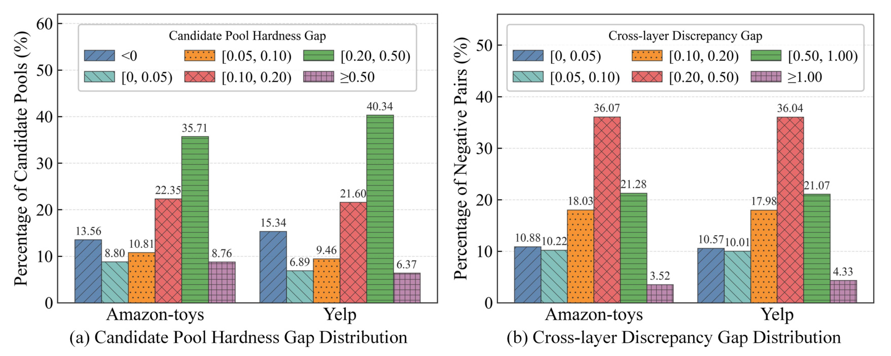
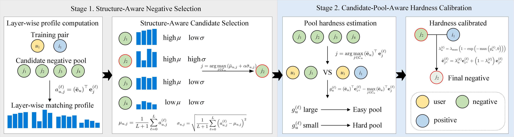
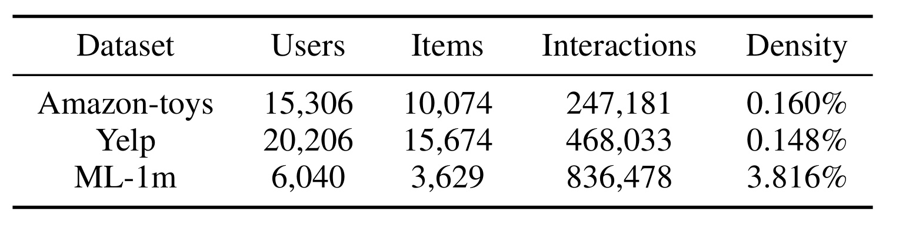
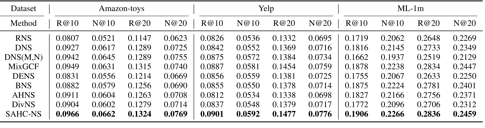
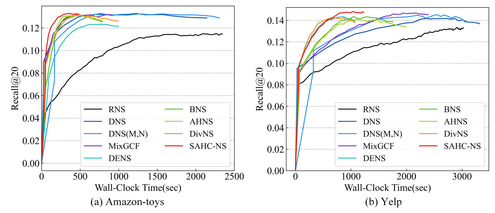
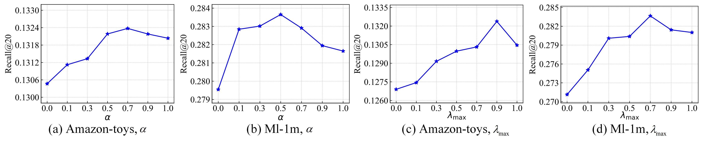
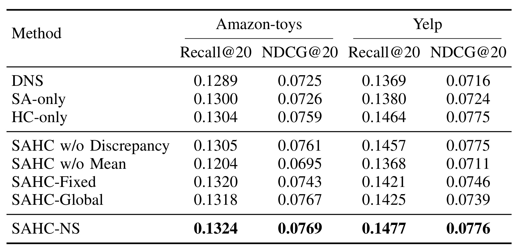
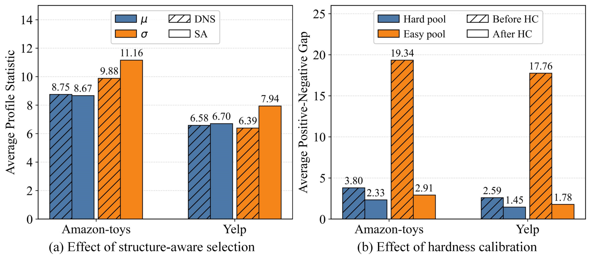
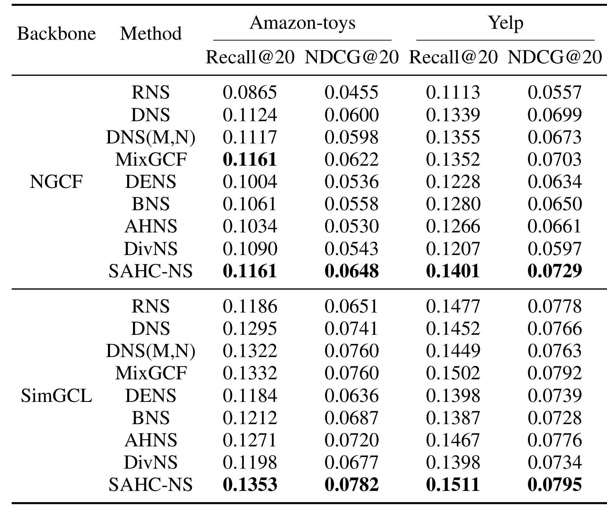

SAHC-NS：面向隐式协同过滤的结构感知与难度校准负采样
论文 SAHC-NS: Structure-Aware and Hardness-Calibrated Negative Sampling for Implicit Collaborative Filtering 研究 GNN 隐式协同过滤中的负采样。作者为 Jiayi Wu、Zhengyu Wu、Xunkai Li、Hongchao Qin、Rong-Hua Li 和 Guoren Wang，第一作者主机构为北京理工大学。论文于 2026 年 8 月 17 日以 arXiv:2608.16587 公开。论文给出的官方匿名代码入口 已单独打开核验：入口会重定向到 SAHC-NS-CEF2 仓库 API，但当前会话返回 401 not_connected，因此只能确认代码入口存在，本轮未能核验仓库文件、环境与复现命令。
现有两阶段负采样往往忽略不同训练实例的候选池难度差异，又常将 GNN 多层邻域中的匹配行为压缩成一个最终分数。结果是：已经很难的池可能被过度硬化并放大假负例风险，很容易的池又可能仍提供不足的训练信号；同时，最终分数相近但跨层结构差异很大的候选负例也会被错过。
1. 背景和问题
隐式反馈只记录点击、购买、观看等已发生行为，没有观测到的用户—物品对同时混合了“真的不喜欢”、“还没曝光”和“未来可能喜欢”。全量遍历未观测集合在工程上不可行，所以 BPR 等成对排序目标通常为每个正例配一个或多个采样负例。如果负例太容易，模型几乎无需改变决策边界便能拉开分数；如果负例过难，它又可能其实是未观测正例，错误的反向梯度会破坏用户偏好表示。因此，“难”与“可靠”不能等同，负采样需要在信息量与 false negative 风险之间取得平衡。
高级负采样常采用两次处理：先从巨大的未观测物品集中构造小候选池，再依据当前模型选择或合成更有信息量的负例。DNS 偏向选取预测分数最高的物品；MixGCF 将正例信息注入负例表示；DENS 尝试分解相关和无关因素；SRNS、BNS、AHNS 等路线则更明确地处理假负例或难度控制。SAHC-NS 并不否定两阶段范式，而是指出两个更精确的缺口。
第一个缺口是 candidate-pool hardness mismatch。候选池由随机性、用户历史与当前表示共同决定，其最难候选与正例的距离并不一致。若对每个池都使用同一增强分布，则难池中的负例可能被继续拉向正例，而易池里的负例即使增强也仍不够难。论文在 LightGCN+DNS 的预备分析中发现：Amazon-toys 和 Yelp 上，归一化正负间隔小于 0.10 的候选池分别占 33.18% 和 31.69%，而间隔大于 0.20 的池分别占 44.47% 和 46.72%。同一个全局强度显然不适合这两端。
第二个缺口是 layer-wise structural blindness。LightGCN、NGCF、SimGCL 类模型在不同传播层中聚合不同范围的协同结构；最终嵌入将这些层聚合成一个向量，单一点积会隐藏分层差异。论文把最终分数差小于 0.01 的两个负例视为分数相近，再比较层匹配分数标准差的尺度归一化间隔。Toys 和 Yelp 都有超过 60% 的这类负例对在跨层差异间隔上大于 0.20，约四分之一超过 0.50。这不代表标准差越大就越是真负例，它只说明最终分数不足以描述训练价值。
这两个缺口并非彼此独立：若选择阶段只看最终分数，采样器首先可能挑错“值得增强”的候选；若增强阶段再忽略池本身已经很难，就会在错误对象上施加过强监督。反过来，即使结构感知选择找到了跨层行为更有辨识度的候选，固定插值强度也无法解释为什么同一用户的某个训练对需要强增强、另一个训练对却应保持保守。SAHC-NS 因而把负采样拆成“候选的相对训练价值”和“当前池可承受的硬化幅度”两个条件量，而不是把两者压缩为一个最终分数。需要注意的是，这仍然是模型内部信号：层间波动和分数间隔都不是物品真实语义，也没有直接提供曝光、未点击或后续转化标签。

Figure 1 的左图按正例与池内最强负例的归一化间隔分箱。两个数据集都不是集中在单一难度区间：Yelp 上 [0.20,0.50) 一箱达 40.34%，但仍有 15.34% 的池间隔小于 0，意味着最强候选的分数已不低于正例。右图只在最终分数相近的负例对中进行比较，但差异间隔 [0.20,0.50) 的比例在两个数据集均约 36%，[0.50,1.00) 也超过 21%。因此这张图支撑的是“应根据池状态差异化处理，并保留分层信号”，而不是“始终选最难的负例”。还要区分两幅子图的统计对象：左图按训练对统计整个候选池，右图按最终分数相近的负例对统计层间差异；两个比例不能相加，也不能据此估算假负例率。它们共同提供的是设计动机，而不是标签级因果证据。
2. 方法
2.1 问题形式化与 GNN 多层表示
设用户集为 $\mathcal U$、物品集为 $\mathcal I$、观测交互为 $\mathcal E$。对正例 $(u,i^+)$，从用户 $u$ 的未观测集构造候选池 $C_u$ 后，任意负采样器可写成： 符号解释：$u$ 是用户，$i^+$ 是观测正例，$C_u=\{j_1,\ldots,j_N\}$ 是大小为 $N$ 的候选负例池，$\mathcal R$ 是推荐器产生的表示集，$\pi$ 是采样规则，$\bar{\mathbf e}_{i^-}$ 是用于训练的负例最终表示。对真实物品采样器，它是被选物品的嵌入；对 SAHC-NS 这类合成采样器，它可以是嵌入空间中的虚拟负例。
GNN 骨干为用户和物品保留从初始层到第 $L$ 传播层的表示： 符号解释：$L$ 是图传播最大层数，$\mathbf e_u^{(\ell)}$ 和 $\mathbf e_i^{(\ell)}$ 分别是用户 $u$ 与物品 $i$ 在第 $\ell$ 层的嵌入，$\ell=0$ 是初始表示，更高层聚合更远范围的协同邻域。方法依赖这组中间表示，因而它的适用前提是骨干能暴露分层表示。
不同推荐器可以使用自己的聚合规则： 符号解释：$\operatorname{Agg}$ 是骨干特定的分层聚合函数，$\bar{\mathbf e}_u$ 和 $\bar{\mathbf e}_i$ 是聚合后的用户、物品表示，最终匹配分数为 $\hat y_{ui}=\bar{\mathbf e}_u^\top\bar{\mathbf e}_i$。SAHC-NS 不替换 $\operatorname{Agg}$，它只在训练时使用聚合用户向量作为稳定锚点，与候选物品的每一层表示比较。
负例构造完成后，原有 BPR 目标保持不变： 符号解释：$\mathcal L_{\mathrm{BPR}}$ 是成对排序损失，$\sigma$ 是 sigmoid 函数，$\hat y_{ui^+}$ 和 $\hat y_{ui^-}=\bar{\mathbf e}_u^\top\bar{\mathbf e}_{i^-}$ 分别是正例与负例分数，$\beta$ 是 L2 正则系数，$\Theta$ 是模型参数，$\lVert\Theta\rVert_2^2$ 抑制参数过大。为训练构造更难负例会增大负例项的梯度，但若其实是假负例，这个更强梯度也会更有害。

Figure 2 将一个训练对的处理拆成两阶段。Stage 1 先对 $j_1\ldots j_4$ 逐层打分，得到每个候选的 layer-wise profile；其均值 $\mu$ 表示总体匹配强度，标准差 $\sigma$ 表示跨层波动，图中的 $j_2$ 因为同时具有较高均值和较高差异而被选中。Stage 2 不直接使用 $j_2$，而是在每层比较正例与整个候选池中最强负例。间隔大说明池容易，可以把 $j_2$ 向正例方向插值得更多；间隔小则保留更多原始负例。图中蓝色正例与红色被选负例之间的插值发生在每个传播层，之后才按骨干原有规则聚合，因此 HC 调整的是训练监督的几何位置，并未改写用户—物品图或增加线上模块。因此 SA 回答“选谁”，HC 回答“把它增强到多难”，两者的互补关系是框架的主线。
2.2 结构感知负例选择（SA）
对每个候选物品 $j$，SA 用聚合用户表示去查询物品的每一层表示： 符号解释：$a_{u,j}^{(\ell)}$ 是用户 $u$ 与候选 $j$ 在物品第 $\ell$ 层视图下的匹配分数，$\bar{\mathbf e}_u$ 是聚合用户锚点，$\mathbf e_j^{(\ell)}$ 是 $j$ 的第 $\ell$ 层表示，$\top$ 表示转置后做内积。把所有层连成向量 $\mathbf a_{u,j}$ 后，可以同时看总体高低与层间波动。
平均难度定义为： 符号解释：$\mu_{u,j}$ 是候选 $j$ 对用户 $u$ 的跨层平均匹配强度，$L+1$ 是包括初始层在内的层数，$\sum$ 对 $\ell=0$ 到 $L$ 的 $a_{u,j}^{(\ell)}$ 求和。$\mu$ 保留了硬负采样的基本逻辑：平均上越接近用户偏好，越能提供区分性梯度。
跨层结构差异则用标准差表示： 符号解释：$\sigma_{u,j}$ 是候选 $j$ 的层间匹配分数标准差，$a_{u,j}^{(\ell)}-\mu_{u,j}$ 是第 $\ell$ 层相对均值的偏离，平方后求平均再开根。$\sigma$ 大表示候选在某些协同范围与用户很匹配、在另一些范围又不匹配，它可能处在偏好边界的结构模糊区。但 $\sigma$ 本身不能保证候选足够难，所以必须与 $\mu$ 合用。
不同用户和候选池的分数尺度可能不同，因此两项统计分别在池内做标准化： 符号解释：$\bar\mu_{u,j}$ 和 $\bar\sigma_{u,j}$ 是标准化后的均值难度和结构差异，$k$ 遍历池 $C_u$ 中的候选，$\operatorname{mean}$ 与 $\operatorname{std}$ 分别是池内均值和标准差，$\epsilon$ 是避免除零的小常数。这个操作强调池内相对次序，也意味着候选池的构成会影响选择结果。
最终选择分数与最大化操作分别为： 符号解释：$q_{u,j}$ 是结构感知分数，$\alpha\geq0$ 是跨层差异权重，$\bar\mu_{u,j}$ 贡献平均难度，$\bar\sigma_{u,j}$ 贡献结构波动。$\alpha$ 过大时，一个平均上不难、但偶然在某层波动很大的候选可能被过度偏好。 符号解释：$j^\star$ 是 SA 选出的候选，$\arg\max$ 返回使目标最大的索引，$j\in C_u$ 限定搜索仅在当前小池内，$q_{u,j}$ 同时考虑均值难度与跨层差异。SA 的产物仍是一个真实候选物品，后续 HC 才对其表示进行校准。
2.3 候选池感知难度校准（HC）
HC 的目标不是再选一次 $j^\star$，而是判断当前候选池在每一层已经有多难。它使用整个池中层分数最高的候选，而不是 $j^\star$，因为 $j^\star$ 还混合了结构差异偏好，不是纯粹的池难度指示器。分层正负间隔为： 符号解释：$g_u^{(\ell)}$ 是第 $\ell$ 层正例与池内最强候选的间隔，$p_{u,i^+}^{(\ell)}$ 是正例层分数，$m_u^{(\ell)}$ 是候选层分数最大值，$\max$ 是最大化算子，$\bar{\mathbf e}_u$、$\mathbf e_{i^+}^{(\ell)}$、$\mathbf e_j^{(\ell)}$ 分别是用户锚点、正例层表示和候选层表示。$g$ 大表示池内最强负例仍距离正例较远，因而池较易；$g\leq0$ 表示至少一个候选分数已不低于正例。
论文将间隔映射到 $[0,1]$ 的池难度分数： 符号解释：$\rho_u^{(\ell)}$ 是第 $\ell$ 层的候选池难度，$\exp$ 是指数函数，$\max(g,0)$ 把负间隔截断为 0。当 $g\leq0$ 时 $\rho=1$，池被视为已经很难；当 $g>0$ 时，间隔越大则 $\rho$ 越小。指数映射避免了用正例分数做除法，后者在训练早期可能不稳定。
分层插值强度由池难度反向控制： 符号解释：$\lambda_u^{(\ell)}$ 是第 $\ell$ 层实际插值系数，$\lambda_{\max}$ 是全局最大增强上限，$\rho_u^{(\ell)}$ 是池难度。易池的 $\rho$ 小，$\lambda$ 接近上限；难池的 $\rho$ 大，$\lambda$ 趋近 0。$\lambda_{\max}$ 只是限制向正例移动的幅度，不能判定一个未观测物品是否真负例；增强 hardness 必须与 false-negative 风险一起评估。
对 SA 选出的 $j^\star$，每层都在正例和原负例之间插值： 符号解释：$\tilde{\mathbf e}_{j^\star}^{(\ell)}$ 是校准后的第 $\ell$ 层虚拟负例，$\lambda_u^{(\ell)}$ 是正例成分权重，$\mathbf e_{i^+}^{(\ell)}$ 是正例层表示，$\mathbf e_{j^\star}^{(\ell)}$ 是被选负例层表示，$1-\lambda_u^{(\ell)}$ 是原负例成分权重。插值把负例拉向正例以增加区分难度，但这是嵌入空间中的合成监督，不对应一个线上可直接召回的真实物品。
最后按骨干原有规则聚合各层校准表示： 符号解释：$\bar{\mathbf e}_{i^-}$ 是进入 BPR 分数的最终负例，$\operatorname{Agg}$ 与骨干聚合函数相同，$\tilde{\mathbf e}_{j^\star}^{(0)}\ldots\tilde{\mathbf e}_{j^\star}^{(L)}$ 是所有层的校准负例表示。训练时要完整执行 SA 和 HC；模型训练完成后，线上推理仍使用骨干的用户—物品最终分数，不需要构造训练负例。
2.4 时间复杂度与使用边界
设 mini-batch 大小为 $B$、候选池大小为 $N$、传播层数为 $L$、嵌入维度为 $d$。SA 需对每个 batch—候选—层组合计算内积，主导复杂度为 $O(BN(L+1)d)$；均值、标准差、标准化和选择只增加 $O(BN(L+1))$ 标量操作。HC 计算池最大分数与间隔需 $O(BN(L+1))$，对选中负例插值需 $O(B(L+1)d)$，整体仍由 $O(BN(L+1)d)$ 主导。
这个复杂度结论建立在有界小候选池上，论文默认 $N=10$；它不意味着可在全量物品库上无代价计算分层 profile。另外，方法需要 GNN 骨干的中间层物品表示，对只输出最终嵌入的 MF、序列 Transformer 或工业召回模型，不能未加改造地套用。它也是训练时采样器，不是新的在线检索或排序架构。
3. 实验结果
3.1 数据集、对比方法与五随机种子设置
论文使用 Amazon-toys、Yelp 和 ML-1m 三个真实世界隐式反馈数据集，统一做 10-core 过滤，再将交互随机分为 8:1:1 的训练、验证和测试集。指标为 Recall@$k$ 和 NDCG@$k$，$k\in\{10,20\}$。默认骨干是 LightGCN：64 维嵌入、3 个传播层、Xavier 初始化、Adam 学习率 0.001、batch size 2048、L2 系数 0.0001，基于验证 Recall@20 早停，patience 为 10。两阶段方法的候选池默认大小为 10。基线包括 RNS、DNS、DNS(M,N)、MixGCF、DENS、BNS、AHNS 和 DivNS，覆盖随机、硬负例、合成负例、可靠性和多样性路线。

Table 1 提醒我们，三个数据集并不同质。Amazon-toys 有 15,306 个用户、10,074 个物品和 247,181 次交互，密度仅 0.160%；Yelp 更大，为 20,206 用户、15,674 物品、468,033 交互，密度 0.148%；ML-1m 虽只有 6,040 用户和 3,629 物品，却有 836,478 次交互，密度达 3.816%。因此，SAHC-NS 在三表均占优能说明它在两种稀疏程度下都有正向迹象，但不能由此推出它覆盖了时序切分、巨大商品库、曝光偏差或真实线上反馈。
稳健性方面，论文明确说明 所有方法都使用五个不同随机种子运行，并报告五次结果的平均值。这比单种子可靠，但 Table 2 没有给出标准差、置信区间或显著性检验，所以对 0.0002 或 0.001 量级的差值不应解读成已经统计显著。此外，8:1:1 是随机交互切分，并非严格的时间外推测试。
3.2 主结果与效率权衡

Table 2 中 SAHC-NS 在 3 个数据集×4 个指标的 12 个单元格上都是表内最高值。Amazon-toys 的 Recall@20/NDCG@20 为 0.1324/0.0769，对应最强非 SAHC 结果 MixGCF 的 0.1315/0.0740；Yelp 为 0.1477/0.0776，相比 MixGCF 的 0.1454/0.0759 有一致增益；ML-1m 为 0.2836/0.2459，而 MixGCF 是 0.2834/0.2447。后一组 Recall@20 绝对差仅 0.0002，在没有方差时只能称为五种子平均上的小幅领先。更有说服力的是，该方法没有只在一个 $k$ 或一个稀疏度下获益；但表格仍不能排除调参预算、随机切分或基线实现差异带来的影响。
效率分析区分了 sampler forward 时间与整轮训练时间。从标准硬负采样加入 SA 后，Amazon-toys、Yelp、ML-1m 的平均每轮 sampler forward 分别从 0.071/0.079/0.137 秒增至 0.136/0.138/0.235 秒；再加入 HC 后变为 0.204/0.240/0.400 秒。因此，SA+HC 两模块实际引入的额外 sampler forward 开销依次是 0.133、0.161、0.263 秒。三数据集整轮训练时间是 6.26、11.89、38.75 秒，额外开销分别约占 2.12%、1.35%、0.68%。这些数字是对默认候选池和所用实验硬件的报告，不是任意 $N$、$L$、$d$ 下都固定的常数开销。

Figure 3 从整体墙钟时间观察效果—效率权衡。Amazon-toys 上，SAHC-NS 的红线很快上升并在 Recall@20 约 0.133 附近达到高位，RNS 则用更长时间仍明显更低；Yelp 上的红线也在较短时间内达到高位。横轴是累计 wall-clock time，纵轴是验证或评测过程中的 Recall@20 轨迹；不同颜色对应九种采样器，因此曲线同时混合了单轮速度、达到早停点所需 epoch 数和收敛路径三个因素。这些曲线的结束时间不一，受早停和不同采样器收敛速度影响；不能只比最右端时间就得出单步速度结论。该图与上面的分步计时共同表明：在当前三个数据集和 $N=10$ 设定中，收益没有被一个与总时长同量级的额外训练代价抵消；它没有提供 GPU 型号变化、峰值显存或大候选池扩展下的成本证据。
3.3 参数敏感性与 false-negative 风险

Figure 4 将 $\alpha$ 和 $\lambda_{\max}$ 都在 $\{0,0.1,0.3,0.5,0.7,0.9,1.0\}$ 上扫描。Amazon-toys 的 $\alpha$ 曲线在 0.7 附近达到峰值，ML-1m 在 0.5 附近更好，说明跨层差异是有用的辅助信号，但不能压过均值难度。$\lambda_{\max}$ 在 Amazon-toys 上约 0.9、ML-1m 上约 0.7 达到最高点，继续增大到 1.0 时均回落。这个回落是论文对 false-negative 风险的直接实验信号：把合成负例过度拉向正例，会使训练监督不再可靠。不过，该试验只展示 Amazon-toys 和 ML-1m，没有报告 Yelp 曲线，也没有直接标注真假负例；所以“过大强度增加潜在风险”有间接证据，“HC 能准确识别假负例”则没有被证明。
3.4 消融与机制验证

Table 3 把消融分成模块级与机制级。模块级上，Amazon-toys 的 DNS Recall@20/NDCG@20 为 0.1289/0.0725，SA-only 为 0.1300/0.0726，HC-only 为 0.1304/0.0759，完整 SAHC-NS 是 0.1324/0.0769；Yelp 上 HC-only 已达 0.1464/0.0775，完整方法进一步到 0.1477/0.0776。这说明两模块可以独立带来收益，且完整组合更好，但 Yelp 上绝大部分增益来自 HC，SA 的追加幅度很小。机制级上，w/o Mean 的下降明显大于 w/o Discrepancy，确认平均难度是主信号；Fixed 和 Global 都不及逐池、逐层校准，则支持 HC 的粒度设计。

Figure 5 不再只看排名结果，而是检查模块是否按设计工作。左图在同一候选池内比较 DNS 和 SA：Amazon-toys 的平均难度从 8.75 略变为 8.67，跨层差异却从 9.88 增到 11.16；Yelp 的平均难度从 6.58 变为 6.70，差异从 6.39 增到 7.94。作者汇总为差异增加 12.96% 和 24.26%，均值难度变化不超过 1.9%。右图按平均正负间隔的顶部/底部 20% 划分易池和难池；HC 使易池的间隔从 19.34/17.76 大幅降到 2.91/1.78，难池则从 3.80/2.59 温和降到 2.33/1.45。这支持“易池多增强、难池少增强”，也把 SA 的选择效应与 HC 的校准效应分开观测，但仍没有直接观测增强负例的真实语义标签。
3.5 跨骨干适用性及其边界

Table 4 将采样器接到 NGCF 和 SimGCL，仅在 Amazon-toys 和 Yelp 上比较 Recall@20/NDCG@20。NGCF+SAHC-NS 在 Amazon-toys 为 0.1161/0.0648，其 Recall@20 与 MixGCF 并列最高、NDCG@20 单独最高；Yelp 为 0.1401/0.0729，两项均为表内最高。SimGCL+SAHC-NS 在 Amazon-toys 达 0.1353/0.0782，Yelp 达 0.1511/0.0795，也都是表内最高。这表明 SA/HC 不只依赖 LightGCN 的单一实现，但实验重用了同一批数据与类似 GNN 层结构，也没有覆盖序列推荐、多模态推荐、非图骨干、全量 softmax 或线上 A/B 试验。因此准确结论是：它在论文测试的三个 GNN-based implicit CF 骨干中具有一定可接入性，而非已经证明为通用负采样解法。
4. 总结
4.1 我的判断
SAHC-NS 最有价值的部分，是将两个常被混为“调硬一点”的决策拆开：结构感知选择决定哪个候选具有训练价值，难度校准决定当前候选池允许多大的增强。这个分工与消融证据是一致的：均值难度仍是选择主信号，跨层差异帮助找到最终分数掩盖的结构模糊性，HC 则使增强对易/难池产生不同幅度。在当前数据和 $N=10$ 下，它以小于 2.12% 的报告额外每轮开销换得了一致的平均指标改善，这一性价比值得复现。
对工程而言，方法最容易迁移的不是某个固定 $\alpha$ 或 $\lambda_{\max}$，而是“先估计当前候选集的难度，再分层调整增强”的控制思路。它可用于检查硬负例管线是否在不同用户、不同 batch 和不同图传播层上实际产生了不同的难度分布。但它不应被直接解读为假负例识别器：HC 观察的是模型分数间隔，不是曝光或真实偏好标签。
4.2 局限、复现重点与后续跟进
局限与风险至少有四项：
- 骨干范围有限。 方法需要 GNN 分层表示，实验仅覆盖 LightGCN、NGCF 和 SimGCL，不能自动外推到矩阵分解、序列 Transformer 或大模型推荐。
- 假负例只被间接处理。 $\lambda_{\max}$ 与池难度抑制过度硬化，但论文没有真实假负例标注，也没有曝光信号验证校准后负例更可靠。
- 统计不确定性报告不足。 虽然精确使用五个随机种子并报平均值，但表中没有方差或显著性，小收益的稳定性仍需核验。
- 数据和切分边界明显。 只有三个公开数据集，且使用随机 8:1:1 分割，未验证时间漂移、长尾物品、冷启动和线上反馈环。
- 开销依赖候选池与中间表示。 报告的 0.133/0.161/0.263 秒额外开销基于 $N=10$ 和当前实验环境，在更大池、更多层或分布式存储下需重测。
后续建议优先做三件事。第一，在官方仓库恢复可读后核对数据预处理、五个随机种子、参数搜索范围与计时代码，重现表 2 的均值并补报标准差。第二，固定骨干和训练预算，联合扫描候选池大小 $N$、$\alpha$ 和 $\lambda_{\max}$，观察额外开销、收益与校准后正负间隔是否同时稳定。第三，引入曝光但未点击、后续转化或反事实估计作为假负例的近似标签，直接检验 HC 是否真的降低误伤，而不是只降低模型分数间隔。如果要迁移到工业系统，还应在不改线上推理链路的前提下，单独监控不同用户群、活跃度和物品流行度分组的负例难度与误伤率。